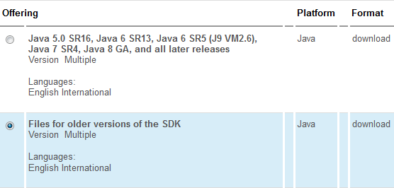
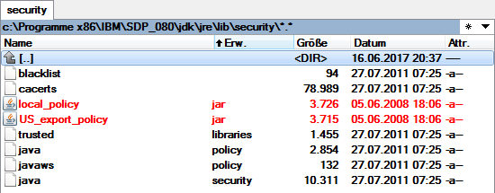
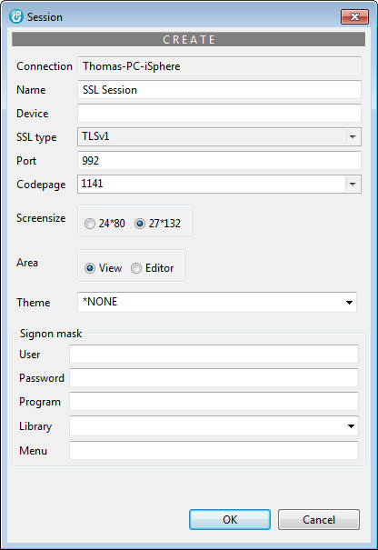
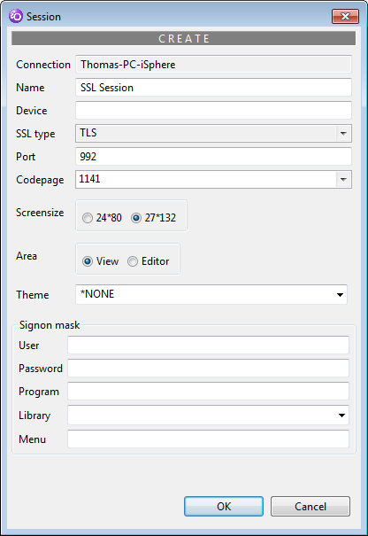

SSL sessions should work right out of the box for RDi 9.5 and higher. For RDP 8.0 and WDSCi 7.0 you need to install the unrestricted.zip file from the IBM web page Downloading and installing the unrestricted JCE policy files.
Make sure to download the version for "Files for older versions of the SDK", because RDP 8.0 uses Java 1.6 SR 9 and WDSCi 7.0 uses Java 1.5 SR 8a:

| Note: You need an IBM ID to login for downloading the file. The IBM ID is free of charge and does not hurt. |
Then copy the content of the zip file into the security folder of RDP or WDSCi:
[IBM]\SDP\jdk\jre\lib\security\
The path might be different on your PC.
Example from a test PC:

The red files have been replaced with the files from the zip archive.
| RDP 8.0 | WDSCi 7.0 | |
| Try the different SSL types or use TLSv1 which worked for sure on a test PC. | Try the different SSL types or use TLS which worked for sure on a test PC. | |
|  |  |
Follow these steps to use self-signed certificates for connecting to your server:
c:\IBM\SDP_096\jdk\bin\